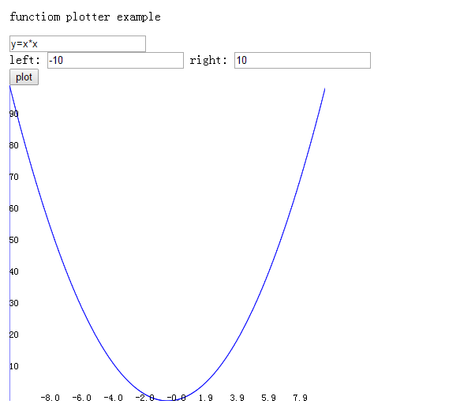
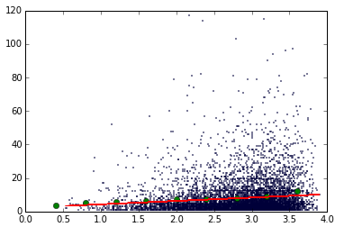
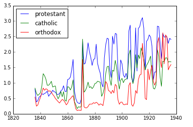

yiyuezhuo's site
这里放了一些项目地址的演示，由于是GitHub page所以可能很长时间才能看到这个页面。
点对点HTML游戏
在线游玩仓库地址
Chrome运行图示

游戏： 这个剧本是从我改造铁与血（一个一战剧本）的战争与和平1805战国史剧本中提取的信息，开始视角在左上角什么都没有（有菜单，如果菜单太大可能是没有执行完初始化），你默认是瑞士，可以移到大概地图中间看到蓝色的那一片就是你。点击区域有assign与transport命令，assign可以移动你的部分兵力到邻格（这里没限制只能移动到邻格为了调试方便，但最好按这个规则，AI是遵守的。）点击敌方所在格，如果有你的兵力与敌方兵力在同一格可以选择fight命令或bliz命令，发起战斗占领该格。伤亡是用兰彻斯特方程结合兵力算的，基本上就是相同敌人数量你数量越多你自己伤亡越小。按菜单的next turn就可以下回合（可能会花一点时间） 每回合每个地区自动产生1兵力，如果你觉得有一些机械的操作太烦可以用之前提到的transport命令，该命令可以将一个地区指向另一个地区（选择这个命令后点击另一个地区即可），每回合你开始操作前自动将能移动的兵力全移动到指向的地区。如果你度过了初始生存期可能会开始需要这个命令简化操作。 项目与源代码：
有两个部分,project1与project3，相比来说project1更像战国史原版，但project3开发的更长时间一点，是RISK风格的，也就是说每个地区有一个兵力数量，而不是将领驱动（project1是）的。 这个项目本来是想做战国史剧本信息提取器(如此之多的结构化数据资源你懂得，虽然我对它的某些写法无力吐槽，比如id居然可以是字符，而生年这些简直坑爹)，一开始是想转成民国无双剧本，不过没人关注，个人觉得继续做民国无双剧本太耗人工就没做下去，然后是project1，这个本意就是模仿战国史机制，不过AI做的很烂（只会合在一起移动），代码结构更烂，后面就没动力继续写了。 之后出于某个动机想写个也是点对点驱动但不是将领驱动的游戏，就把project1的1000多行代码中拿了300+行建了project3，自以为代码结构比以前好得多，也就能继续写下去了。project3只用了战国史剧本的势力和城的网络信息。
六角格HTML兵棋
一个可以用csv文件定制剧本的经典兵棋（掷骰，战斗结果表等）引擎
在线游玩仓库地址

极简Markdown+MathJax编辑器
主要就是试图把IPython Notebook里的Markdown功能拿出来，不用每次开都启动半天服务器。。同时做到极简化，不过还是自带了十几个Markdown样式
the app
函数图像绘制
准备做个微分方程的游戏，先造个轮子，感觉现有的轮子不太好用。

历届历次中会议公告的数据挖掘
分析一些问题在以这些会议公告形成的文本序列所体现的在各时期的热度,然而并没有什么卵用

报告内容之一
一卡通数据与社会网络研究
通过一卡通购买数据挖掘社交关系，从而得到类似下面的GPA-社交系数关系图类似的分析结果
仓库地址
维多利亚2存档解析器
弄不到历史计量数据干脆直接提取游戏的玩玩计量。。正在撸一个Web UI
贴吧的相关介绍仓库地址

基督教平均收入曲线
statsmodel包翻译计划
仓库地址已完成的部分
- index.rst 首页
- gettingstarted.rst 最小例子
- regression.rst 回归模型对象
- example_formulas.rst 使用R风格公式表示模型
- endog_exog.rst endog,exog(因变量，自变量)来源
- about.rst statsmodels模块历史
我其他翻译的文档有pyparsing教程，scipy.stats文档,参与翻译Python最佳实践。以前还汉化过罗马全面战争的拿破仑MOD，HPS中途岛手册。 参与翻译过TOAW3的剧本，WITE手册等，坑了不少人